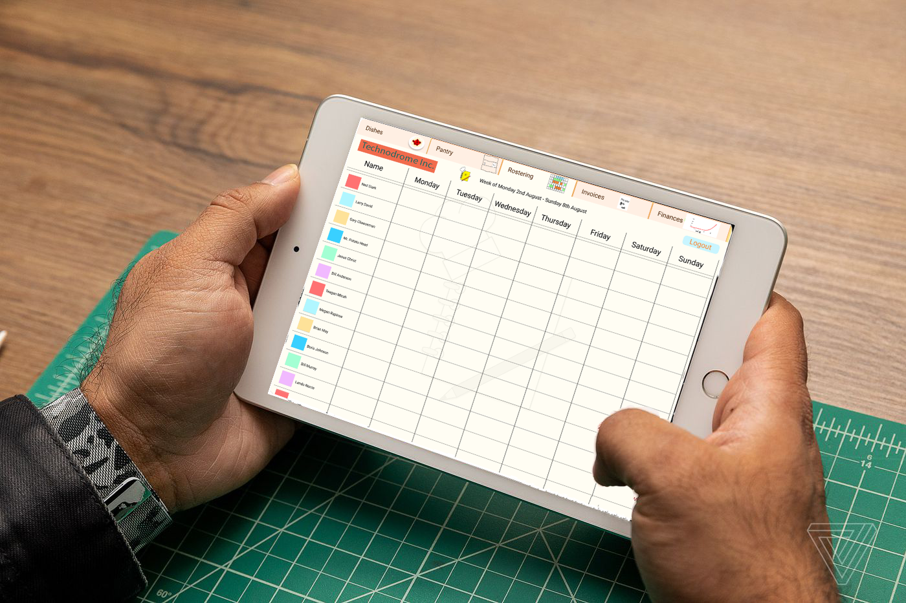

Topic:
Yes Chef is a hospitality application currently under development by Technodrome Inc. Yes
Chef’s primary goal is to consolidate all aspects of kitchen administration, allowing a chef
or manager to easily monitor and control the business component (food costing, recipes,
daily invoicing and wage control). The app will take information from the user in the form
of goods, operating percentages, profits & expenses to allow a day-to-day feedback on
where the business sits both financially and stock wise. The application will also delve into
rostering, ordering.
In the manically busy world of hospitality the need for quick and easy behind the scenes
operation is a must have for business, our team is determined to design and build an application
that is easy to use, intuitive and provides up to date and relevant information for the user.
Based on the Philosophy of being user friendly Yes Chef! will be the go-to application for the
Hospitality industry.
Motivation:
“As of 30 June 2016 there were 85,284 eating out establishments in Australia. The highest
number (29,432) were fast food outlets, comprising 34.5% of the national total.”
(Eating Out in Australia 2017) p4 by the intermedia group Pty Ltd, 2017.
Figure 1: Eating Out in Australia 2017 by the intermedia group Pty Ltd, 2017.
Sixty five percent of the hospitality industry is comprised of venues that potentially require
administration of product and product costing and yet the there is a complete lack of an
application that tackles the behind the scenes of kitchen operation. We questioned chefs
from all over the world to ask them what they would expect from our app.
“It would need to track staff times so the ability to enter hours worked, food cost it would need to have
the ability to put in stock received and then track stock usage, possibly a barcode scanner for products
and the ability to enter weights and measures. Other tracking is a bit more complicated as breaking
down electricity and gas etc is more of an overall running cost than a kitchen specific cost.”
(Matthew Puncher, former chef of Calcot Manor, Gloucestershire, England. Pers. Conv, 12 July 2021)
“Something easy to use to add recipes an also universal measures like both pounds ounces liters grams etc. Different
nationalities use different measures.”
(Simon Macleod, Owner/Chef N17 Burgers, Port Doulas, Australia. Pers. Conv, 12 July 2021)
“We use ctb at work, one of the things I have noticed is when a supplier changes their prices on items they don't
actually notify you which can lead to massive variances, we spend about 15 to 20 grand a week on stock so you can
imagine how much money we make on food a week, when I do our weekly stock take I notice certain variances.”
(Danial Stalder, Chef, The Ocean Club Four Seasons Resort, Bahamas. Pers. Conv, 12 July 2021)
Landscape:
In researching this we have found that the applications available are usually “recipe” apps
or “measurement converters”, Bustle.com lists the best apps for aspiring Chefs.
1) Kitchen Dial (Measurement converter)
2) Allrecipies dinner spinner (Recipe Sharing)
3) Epicurious (Recipe sharing and rating)
4) Handpick (Ingredient list with pairing suggestions)
5) Hello Fresh (Ingredient delivery service based on meal choices)
6) Side Chef (Step by step recipes)
7) NYT Cooking – Recipes from the New York times (Recipe list)
(The Best Apps For Aspiring Chefs, Michelle Regalado, July 2017)
This list and similar lists have very useful applications which are limited in scope. Hospitality
targeted apps like ‘Lightspeed’ concentrate on recipe costing without the ability to make the
dish part of the whole or useful beyond costing the dish. Mark Berry one of our team
members has encountered these challenges in his previous roles in the hospitality industry
and has had to created workarounds by using spread sheets.
Figure 2: Food Cost Calculator by Lightspeed 2021.
Yes Chef Primary Objective:
The primary objective of this project is to create an application called Yes Chef that will
classify as an administration tool for the hospitality industry, this application will take
some months to construct as there are many key features to introduce and develop.
Tecnodrome has set an artwork and basic demo deadline of the 22nd of August 2021,
at this time we will have a Figma demonstration, video presentation & Alternate approaches
for design available to plan our final product.
Develop artwork concepts for application pages:
Tecnodrome has a wonderfully creative team, our company encourages free thinking and
expression, this is especially important when dealing with artistic design, we like to
consider multiple approaches to our vision, each team member contributes to the basic design
stage so that the group has options for directional decision making.
Develop navigation:
Our navigation development stage is to be a visual flow diagram of how the application
will interact with itself, it must show the information that is shared with the user
and the information is shared to other parts of the application separately, this will act as a
roadmap for the development team giving them basic information on each of the application
sections requirements.
Develop basic interface demonstrations:
Tecnodrome’s Engineers & web development team have been busy working on our
first interactive demonstration, although this is a long way from the finished product
it will allow us a concise target to a aim for.

Technodrome Inc, through the challenging work and dedication our wonderful team we have the opportunity to introduce to the world of Hospitality the new essential app to have in any Hospitality business. This app is called “Yes Chef” and this project arose from our CTO Mark’s experiences working in hospitality for (20) years. Over the years he spent a significant amount of time devising different solutions to these numerous logistical challenges ever present in the daily functioning of any hospitality business. After spending years working with adequate but headache inducing spreadsheets, he knew there must be a better way. Now with the backing of a motivated team to share his vision we hope to bring these basic ideas to a practical reality to relieve the unnecessary struggles of those who work in hospitality. We hope that through the development of the app ‘Yes Chef’ we can improve and help bring advancements to this section of the Hospitality industry and make the
overall process much easier for all hospitality businesses that choose to use our app. Technology is an amazing and useful tool for humanity and should be implemented into as many areas as possible, we believe here at Technodome. Inc, as said by Albert Einstein "Imagination is more important than knowledge. For knowledge is limited, whereas imagination embraces the entire world, stimulating progress, giving birth to evolution."
At this point in time, we have a clear outline of what we want to achieve and have made significant steps towards achieving that goal. With core user interface design and interactive prototyping underway we are in the process of refining usability through at first our own internal iterative design process.
Functions that we plan to include into the completed version of App are:
- Ordering Supplies and Ingredients:
Supplies on hand tracking via barcode scanning or manual entry allowing for flexible workflows. Ability to tag storage location via barcode or NFC tag to improve efficiency
- Dish Costing:
Fully customisable and suitable for almost any hospitality recipe costing utilising price per unit, unit quantities and price per weight. Tightly integrated with the ordering and ingredient tracking features to allow for on hand supply tracking if desired.
- A Digital Recipe Book:
Recipe book that can be used standalone, or again with shared functionality linked to dish costing and supply management. Search by title/content keywords or browse by sorted and customisable categories. Useful for managing different sets of menus or quickly pulling up recipes including specific ingredients.
- Invoice Tracking:
The invoice tracking feature In Yes Chef, will be a digitalized logbook scoring all purchases and invoices. By adding prices from all invoices, the application will be able to create a database regarding cost of each individual item used by the user's business. This data can then be used in other function of Yes Chef such as monitoring dish costing and price monitoring. (As development progresses, we hope to implement an API to enable suppliers and businesses to further automate the invoicing and ordering workflow.)
- Cost Monitoring by the Item:
Any hospitality business cannot operate without the purchases of supplies and ingredients. When doing so it is especially important to also be mindful how much each of the required purchases is costing the business. In the times we currently are living in it is common for the prices to fluctuate and if left unchecked this can dramatically affect the budget for any business. Through this feature in Yes Chef, when a regularly purchases item increases this can be tracked over time. Providing valuable insight and directly assisting the decision-making involved in managing a profitable business.
- Rostering:
When it comes to organizing and allocating hours for team members to work each week can be a difficult and tedious job. Industry standard rostering features quickly and easily accessible for both employee and employer. Emphasis on quick readability and visual representation of schedules and times. Easily note and view employee available times, loading and shift management
- Team Communication:
Communication is essential in any team, that is why we have incorporated a team communication feature in Yes Chef. Through this feature of the app, team leaders/supervisors can distribute weekly rosters to the entire team via email. Team members will be able to also communicate with team leaders and supervisors via smaller version of Yes Chef installed in their phones.
- Customisable Interface:
Our desire here at Technodrome Inc. is for ‘Yes Chef” to be a useful tool for all Hospitality businesses not just limited to restaurants and kitchens. Every business is as unique as every member of staff and team involved in running it, with all this in mind we want our app to be fully customizable, so it can be shaped to fit the requirements for all hospitality businesses big and small. With these customizable functions other businesses such as small Cafes and snack kiosks can benefit from the app as well. We do not wish for our users to have to change or adapt their procedures to be able to use our app, instead we want the app to be mouldable and to be shaped to suit the user's needs.
Dead ends and Changes made along the way:
When trying to construct an interactable prototype of Yes Chef, we faced some difficulty when trying to decide what software and program to use in the construction. We wanted to find an easy-to-use program that would allow multiple members of our team to participate and collaborate in the making of a prototype. Some of the other platforms we first tried out were found to be confusing when collaborating with other teammates, limiting in the creating the appearance of the application or was unclear to use for beginner app creators. Unfortunately for many of us on the team, we have never participated in the creation of any application before, so we required a simpler app creator platform. After some time of searching, we settled on using platform called Figma, it was a platform that met all our requirements for our first prototyping phase.
Once the process of creating an actual prototype for Yes chef began, we were faced with the reality that taking our ideas from paper and making them into a functional and working application will require a few modifications and adjustments.
Ash: Senior Software Engineer
Ash is our Senior Software Engineer. Ash is responsible for designing, installing, and developing the majority of the code of our Yes Chef application.
Ash is also responsible for testing all code that has been created, making sure that it works well and addresses the needs and expectations of the customers, vendors, and other clients.
As Ash has the most experience in the team in terms of coding, therefore, he has been appointed Senior Software Engineer and is continuously learning in his spare time to help improve the development of Yes Chef.
Brendan: Integration Architect
Brendan is our integration Architect. Brendan is responsible for maintaining an efficient environment for all our customers, this is done by improving customer satisfaction, increasing productivity within the company, improving the management of applications, and reducing costs.
Brendan does not work alone; he works very closely with all other members of the company to ensure that all components of the project are completed. Brendan will be responsible for future integration of suppliers using ordering systems and integration of point of sales systems.
Brendan has had experience in integration with various applications in previous careers and that is why he has been appointed as the Integration Architect.
Chris: QA Specialist + Test Analyst
Chris is our QA Specialist and Test Analyst. As a QA specialist Chris is responsible for ensuring that all final products that have been developed in Yes Chef meet the company's quality standards.
Chris is responsible for the implementation and development of inspection activities, resolving problems by detecting them first and delivering satisfactory outcomes.
Chris is also responsible as Test Analyst for ensuring that the software is at an adequate level for entry to the open market. Chris’ attention to detail is one of the greatest strengths for this position and is why he has been appointed in this role.
Eddie: UI Artist + Designer
Eddie is our UI Artist and Designer. Eddie is responsible for all graphics within the Yes Chef app and website, his graphics, icons, and buttons are all user friendly to help all users understand and navigate all the features.
Also being the designer for Yes Chef, Eddie is responsible for designing all user aspects of the app and ensuring that everything is user friendly, with great navigation and vibrance.
Eddie has made all artifacts as shown throughout this website and is continuously contributing innovative ideas of application graphics design and new logos, therefore as Eddie has a passion for this area, he has been appointed these positions.
Kim: UI Engineer + Web Developer
Kim is our UI Engineer and Web Developer. As a Web Developer, Kim is responsible for ensuring that our company website is developed in a way that meets today's standards. Kim will also develop the website-based application for Yes Chef allowing access via phone/tablet and desktop.
Kim’s experience in Web Development is an amazing strength for our team and will be a huge role in the company's success. Kim is also our UI Engineer which makes him responsible for designing websites and applications in perspective of ender users and making changes to make sure that it is user-friendly, functional, and attractive.
Kim’s creativity and experience in the development of other applications are why he has been appointed to these roles.
Mark: Chief Technology Officer
Mark is our dedicated Chief Technology officer. Mark oversees the development of our project and is responsible for spreading the word to our external customers, vendors, and other clients to help improve and increase the business.
Mark is also responsible for examining the short and long term needs of the project and will utilise any capital that the company has and use them for investments in the project, therefore, helping the team reach its goal final goal.
As Mark produced the idea of Yes Chef, he has been chosen to be our highest-ranking member.
Introduction:
Yes Chef is an interactive database designed around business management within the hospitality industry and will be a commercial product.
The application will be designed by the team at Technodrome inc, it is scheduled for release in December 2021. Yes Chef is a downloadable application
designed to run on IOS/Android/Mac/Windows operating systems.
Project Overview and Objectives:
At the end of financial year 2020 there were 44,679 cafés and restaurants operating in Australia. (Statistica, Web service, analytics, acquired by Dell 2014) Yes Chef is Targeting every single one of those businesses, proposing an innovative and streamlined way to organize and track multiple aspects of business management. Often a business can be overwhelmed with the many different requirements in management, because of this frequent issue Yes Chef was envisioned, Yes Chef will feature the following utilities accessible through an Interactive UI.
•Dish Costing
•invoice tracking
•Cost monitoring
•Stock Ordering
•Roster Management
•Recipe book
Within each of these subsections of the application will be various layouts displaying what information has been previously
entered in said fields, by organizing various aspects of business management and breaking them down into a simple and easy to use user interface,
Yes Chef’s design can help small businesses the world over get a tighter grip on their finance.
Scope of work
Here are the steps that will be taken to complete Yes Chef and the expected timeframe of completion.
Assemble Team - June, week one, 2021
Establish project goals as a team - June, week two, 2021
Begin development of basic features - June, week four, 2021
Create website mockup - July, week two, 2021
Begin Marketing Campaign with established artifacts - August, week three, 2021
Refine basic features - August, week five, 2021
Finish graphics design overhaul - September, week three, 2021
Bug test application for launch - November, week one, 2021
Complete website overhaul - November, week four, 2021
Release to Yes Chef to the public - December, week four, 2021
Begin initial maintenance phase - December/ ongoing
• Project Schedule
Yes Chef started development in June 2021 and once successfully launched to the public will continue to be updated, Yes chef is currently in the
Development phase and further work is required before release.
By August 22nd, the team will produce tangible artifacts to provide proof of concept for the product. These artifacts are aimed to be a prototype with at least two working sections and various design snapshots to aid in visualization of the Project. Once proof of concept is achieved, the team will continue to conduct regularly scheduled meetings every Tuesday and Thursday. This will continue until the project can be finalized for release. In this phase, all website design will be completed and ready for launch as well as all coding finalized for the basic product. Deadlines are in place and decided as upcoming tasks draw near.
The Development phase is scheduled to end in December 2021 and will be marked by the completion of final bug testing.
The marketing phase is focused on gaining exposure and adoption, with a basic product now functioning, the development team will be reduced to two members who are responsible for keeping services online and fixing bugs Biweekly, releasing any scheduled monthly updates featuring optimization, graphical upgrades, and quality of life patches. Resources will be directed towards gaining partnerships and running advertisements. The adoption of the application will be gauged during this ongoing period, and it will be determined then if the team will divert more resources to Research and Development.
• Success Criteria and Sign-off
The conclusion of this project Development phase will be signaled by the successful release of Yes Chef onto the Android Play Store. Before initial release, Technodome inc’s landing page must undergo a design overhaul that will be tailored towards market research findings, the information obtained during Development. The occasion of release will be recognized via email announcement to investors and potential customers. The project is then to be carried forward from a maintenance perspective or until further developments are ready for implementation.
Reference: Statistica, Number of cafés and restaurants in Australia 2018-2020, Study, statista.com, analytics, study conducted 2018-2020, Australia
The tools and technologies required to develop this app range from a few different hardware options and software options. First, we all decide on as a team is what the type of app we are going to be creating by collating prototypes of the app, agreeing as a team, and building from that decision.
The next thing we must decide on as a team is if we want to code this app for Android only or if we want to develop the app for iOS only.
If we chose to go with the android version for the time being as we start up, we will need to have access to a Windows computer with a minimum of at least 4GB of ram and 2.5GHz of processing power (Margain, 2021).
The software that we will be using to create and build our application is called Zoho Creator, it contains an ultimate range of features enabling our team to get Yes Chef up and running. The cost amount monthly to be able to use this software is $312.75 which provides access for all 6 team members.
The features that Zoho creature includes business data and collaboration across teams, insightful reports, and a prominent level of security.
Zoho creator also takes out the major effort of coding lines and lines of data by using a low code platform. (Zoho - Cloud Software Suite and SaaS Applications for Businesses, 2021).
We will also need an assorted range of handheld devices; these at this moment in time included a Google Pixel 3, a Samsung Galaxy S9 Plus and a Samsung Galaxy S8. Once we have pushed the Android version out, we can start focusing on iOS then we will need to purchase an Apple iPhone 8, Apple iPhone XR and an Apple iPad 6th Gen (BrowserStack, 2021).
Having these devices will enable us to test the features and quality of our app before we push it to go public. Once our app has been established in the world after a few months we can then start developing our business to support other handheld devices.
As for experience within the team, there is quite a broad range of experience within. Ash, Brendan, and Mark all have some understanding of Python coding, and they may be able to use this to their advantage when needing to code any of the app.
Chris, Eddie and Kim have a general understanding of UI design and development, which will be a great strength for the team.
The whole team have a great understanding of web development and if necessary, can take turns helping with the development of the app.
Overall the Technodrome Inc. team has a great understanding of how to create a website and will peruse any dream they have this being the implementation of the Yes Chef app.
References:
Browserstack.com. 2021. Test On The Right Mobile Devices | BrowserStack. [online] Available at:
Margain, E., 2021. Where to start on mobile development?— The hardware. [online] Medium. Available at:
Zoho. 2021. Zoho - Cloud Software Suite and SaaS Applications for Businesses. [online] Available at:


Internal prototype testing for usability. Making use of our Mark’s (our CTO) vision and experience in the industry. If there are any questions along the way, we will reach out to contacts within the industry for input on desired features.
Once we have workable prototypes we will present and share them with people who have experience in the industry and ask them to rate each feature across a range of functionality and usability criteria. We will then use this data to inform our decisions when creating further iterations of the design. Once we reach a stage where we deem the application to be working as intended, we will search for candidates willing to trial run the software in real work environments for longer periods of time and encourage them to give more detailed qualitative feedback.
When conducting the trial runs of the application, we wish to have testers from various areas in the hospitality industry. From busy restaurants to local cafes and anything in between as we wish to gather as much feedback as possible to make Yes Chef a useful tool for a range of hospitality businesses. Based on the gathered feedback we will analyse it and expose the areas in which we require improving. Once the required areas are exposed, we will carry out the required changes to improve the overall app experience.
Once we have obtained a large amount of data and made several improvements and release Yes Chef to the Hospitality Industry. For us here at Technodrome, success in Yes Chef will be when the overall feedback for our beloved app becomes more positive than negative and the number of users begins to increase steadily. Once the users of Yes Chef begin to rely more on our application rather than their physical records and books that is when we feel the true success of this app will be achieved. Our aim with Yes Chef is to digitalize and take over the administration side of any hospitality business and simplify the overall process for any business using Yes Chef.
 Logo created by our UI Artist and Designer
Logo created by our UI Artist and Designer
Each team member to spend 8-10 hours per week on their given task. This includes time spent in meetings and helping others which is just as important as individual work. As many of our skills overlap. Assigned tasks are somewhat flexible and have been described simply and broadly in the planner to allow for people's initiative and creativity to guide them. Especially in the early stages as we need to be able to pivot around each other's ideas, favouring new avenues that progress our core goals and ideas.The basic timeframe we work to has us using an agile style project management and task assigning system. Using the built in Kanban features in Microsoft teams.
Week 6 First major Milestone:
Our preliminary goal for the end of week 6 is to have a general outline and multiple preview prototypes for the app UI. Detailed outlines of all the features. Along with a cohesive vision explained and presented in a video presentation. Moving on from here we will continue to research and flesh out the specifics of the features in design and functionality. Generating multiple prototype proposals at once for team evaluation.
Week 10 Checkpoint:
Have a second checkpoint of revisions and check in with how our current designs and ideas match up with what we defined earlier in the project. Then evaluate on any differences and either adopt these changes or refine what we have, to better fit our original vision. If we can, start implementing some of these core features into functional versions.
Week 13 Checkpoint:
Check in with how all these refinements are tracking and look to consolidate all our work into as polished product as possible to hit the end of week 15 with something we can present to the public.
Week 15 Milestone:
By this point we should have a well presentable and hopefully have some of the basic core features functioning in a deliverable application. Finalised and polished website describing a detailed and up to date version of our software and our progress thus far.
With any project, regardless of size or complexity, there will always be inherent and generalised risks. Yes Chef has a long yet accomplishable road ahead of it due to its specific risks, some of those risks being:
It is new.
Not just the product itself, but the whole idea behind it. There is currently nothing on the public market that Technodrome has been able to find that functions like Yes Chef will. Not only will Technodrome need to be marketing this product to prospective buyers, but multiple test restaurants and cafés will need to be sourced prior to this to adequately test Yes Chef to ensure that it operates as intended. Ease of use will be the biggest risk here as Yes Chef needs to “just work”. While familiarisation with any processes builds speed, Yes Chef will need to prove that, at a minimum, it is comparably quick as current processes with limited to no formal training.
Supplier Integration.
Development towards API access for suppliers for ordering and invoicing is a future milestone for Yes Chef and a feature that Technodrome will be working hard towards. While this feature will allow seamless integration of Yes Chef between customers and suppliers, it will bring with it the added risks associated with suppliers and their supply chains. Not only this, but Yes Chef will need to be demonstrably better or complementary to a supplier's current systems and processes and be compatible with their hardware. This milestone feature will need to be able to operate concurrently with the manual ordering and invoicing processes that Yes Chef will be released with. There are multiple reasons for this, including but not limited to:
- It will provide alternative manual supplier options for customers should their primary supplier fall short of demand
for whatever reason.
- Internet failure. Yes Chef will still be able to produce manual orders and invoices.
- Supplier end technical issues.
- API failure.
User and Supplier Acceptance.
Continuing on from the first point, It’s new. Larger and pre-existing businesses will already have their own processes which they are familiar and comfortable with, while smaller businesses like the corner café may not see the need or benefit. Ease of use again becomes paramount in the success of Yes Chef being implemented into businesses.
User Growth.
It is possible, be it initially or eventually, Yes Chef could have a rapid intake of users. Technodrome needs to be prepared or have in place an infrastructure expansion plan that can rapidly change and evolve to ensure that there is minimal to no disturbance in user experience.
Technodrome will continue to analyse its operation and application design both during and after release to assess new risks and mitigate them wherever possible.
Technodrome has an agreed policy of two meeting per week these are Video conferences implemented though Microsoft Team, in addition
Tecnodrome keeps several channels open on its Discord server for more casual communication, This allows members working on similar topics to
come and go from live chat while engaging in work.
Technodrome has had past issues with team members not communicating with its team members, moving into this stage of the
project every team member has agreed to certain time constraints for the project, as with any company team members are subject to
disciplinary actions or dismissal for severe offences.
Technodrome as a variety of working options for its members in relation to teamwork, some members like to take on
specific tasks as a smaller solo projects to be added back into the greater project later on.
Others prefer to work side by side with each other live in team. Technodrome also uses Git & GitHub for all of its company’s
coding, this allows multiple team members to collaborate at the same time without causing issues.
Skills and Jobs
The planned job roles that would be required to take the project to the next phase require proficiency
in the following 5 skills to perform effectively on the project, all employees will require a baseline
competency of these 5 skills.
Analytical Skills
Written and verbal communication skills
Creativity
Initiative
Problem solving
The following roles and descriptions are that which will be employed in a four-person team.
Application Developer
The main task for a developer is to process and create User interfaces and work on user experience.
It is required to have previous experience with programming languages Kotlin and Java for the initial
Release on Android and Windows. Html and CSS will be required as standard and eventually there
will be need for objective-c and swift languages as iOS is scheduled to release after Android.
A 2019 study from University of Bonn (University, Germany) indicated that on average, most developers don’t implement sufficient cyber security unless explicitly prompted to do so. An article published on Zdnet (ZDNET, news publisher, published March 2019, zdnet.com) explained that the study involved academics from The University of Bonn requesting 260 freelance App Developers to design a mock up social media site using various programing languages and report on these results. The findings showed that 18 out of the final 43 participants needed to be asked to resubmit their project with sufficient data security. The report concluded that out of the 8 password security functions implemented, only 2 of them are recognized as secure within the industry. The study suggests a trend in modern freelance developers lacking knowledge in basic cyber security. In a world rapidly becoming digitally focused, It is of upmost importance that the team's app developer is aware of modern techniques to store user data securely.
Software Designer
Software Designers are required to work on the application development and help to test the user interface
and experience. They will use technical skills in CSS and Html to create a stable website for launch as well as
improve the applications styles, animations and imagery overall, adding character and appeal to the design for
users.
According to an article published on indeed.com (Indeed, employment company, analytics/ recruitment,
established 2004, United States), “Software engineers are required to develop, design, maintain, modify
and debug software” (Software Engineer Skills: Definition and Examples, paragraph one, line one, Article,
Indeed editorial team, published December 9th 2020). Using assorted code visualization tools
(Atom/ Studio Code Viewer) as well as graphic design tools (adobe photoshop/ premiere), the Software
designer will help produce and maintain the basic functions of the application but is responsible
more so for the visual elements than base function.
Quality Assurance specialist
To conclude milestones in development, the team will require a Quality Assurance specialist.
The software development team could infinitely develop the application with updates and tweaks,
and this is where a QA is required. Quality Assurance Specialists are responsible for testing products
and providing feedback to the development team regarding whether a product meets its goals and is fit
for public release. The Quality assurance specialist will work closely with the Development team, testing
progress regularly by performing reviews, polls and bug testing.
A recent blog posted on Getreskilled (Blog, published December 2019, GetreSkilled.com, News publisher, est. 2008)
has indicated the specific personal skills that are required by a quality assurance specialist typically:
Analytical Skills – the role often requires heavy collection and organization of data to be
used in comparisons and help uncover trends.
Critical and logical thinking - Quality assurance can be problem identification focused. It is
important that QA’s can suggest convenient solutions to aid in efficiency for the developers.
Attention to detail – QA’s must have a keen eye to notice when functions return improper or
unappealing results. QA’s will also be knowledgeable about industry regulations and be able to explain
how the app is to comply with them.
Most importantly, a Quality Assurance Specialist will need to be proficient in written and
verbal communication. It is important that they can identify technical errors, provide plausible
solutions or feedback and be able to explain all of this to uniquely skilled departments efficiently and
effectively.
Sales and Marketing Specialist
Finally, Yes Chef’s four-person team will require a Sales and Marketing Specialist. During Development,
it is inevitable that the Designers and Developers will procure tangible artifacts that can be used as demos
for sales and marketing purposes. With specialists in this field on board from the start, they will be able to
work alongside the rest of the team to use these artifacts to influence potential investors or to feature in
advertising campaigns. If Yes Chef is Unknown to the public, it cannot fulfil its purpose of assisting them.
The sales specialist is integral for turning team efforts into profits and simultaneously financial support
for the applications future.
According to the Report summary: Exchanging skills in sales and Marketing
(study/report, Employment-Studies.co.uk) the occupation specific skills include:
“customer service, selling, negotiating and influencing, analysis and decision-making, and management skills”.
These skills are to be considered industry standard within sales. Technical skills that will be required
from the Yes Chef Sales and Marketing team are proficient use of Salesforce (Salesforce, Application, established
1999, San Francisco, United States) an American based software company that provides services focused on
Marketing automation, Analytics and customer Service. The Marketing department will also be proficient with
VOIP applications such as Microsoft Teams(Microsoft teams, web-based communication and collaboration tool,
November 2, 2016, Microsoft Corporation), as generally this department will perform many formal meetings and
sales pitches within their respective time with the company. Microsoft teams will also prove effective for
file sharing images with other departments.
Skills & Jobs References:
ZDNET article - Study shows programmers will take the easy way out and not implement proper password security,
Catalin Cimpanu, March 9, 2019, for Zero Day, Article, Published at
< https://www.zdnet.com/article/study-shows-programmers-will-take-the-easy-way-out-and-not- implement-proper-password-security/>
INDEED article - Software Engineer Skills: Definition and Examples, Indeed Editorial Team, Article, December 9 2020, published at
< https://www.indeed.com/career-advice/career-development/software-engineer-skills>
Getresklled article - What is a Quality Assurance Specialist and what do they do?, by anonymous, published in December 2019 at
< https://www.getreskilled.com/what-is-a-quality-assurance-associate/>
Report Summary - Report summary: Exchanging skills in sales and Marketing, Article/ Study, United Kingdom, published at unknown date at
< https://www.employment-studies.co.uk/report-summaries/report-summary-exchanging- skills-sales-and-marketing>